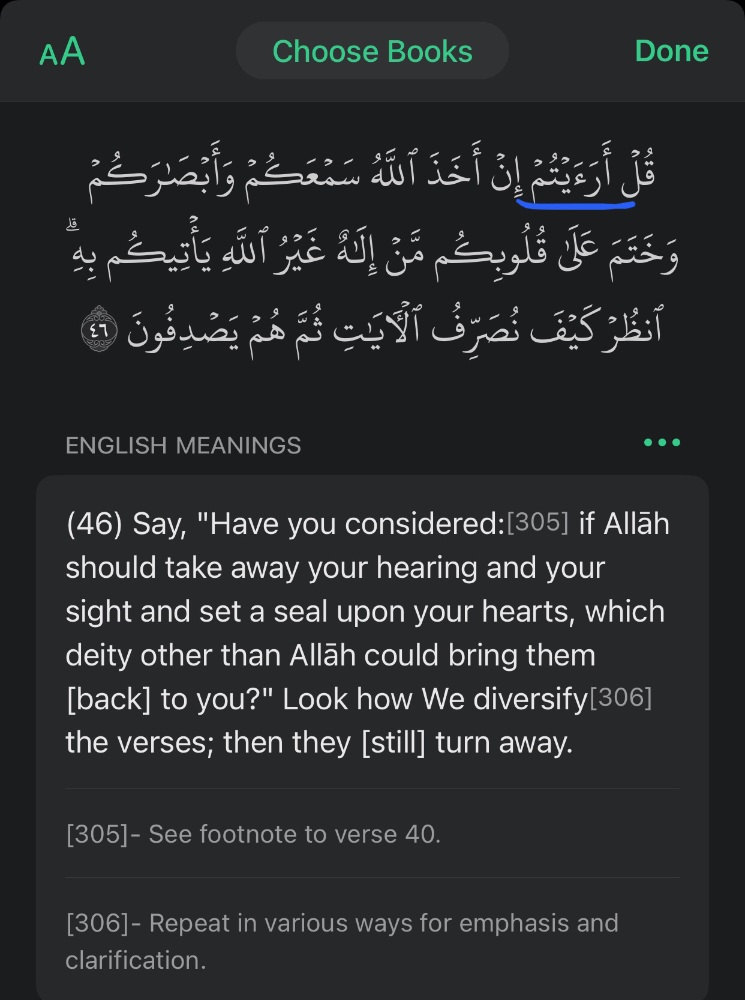
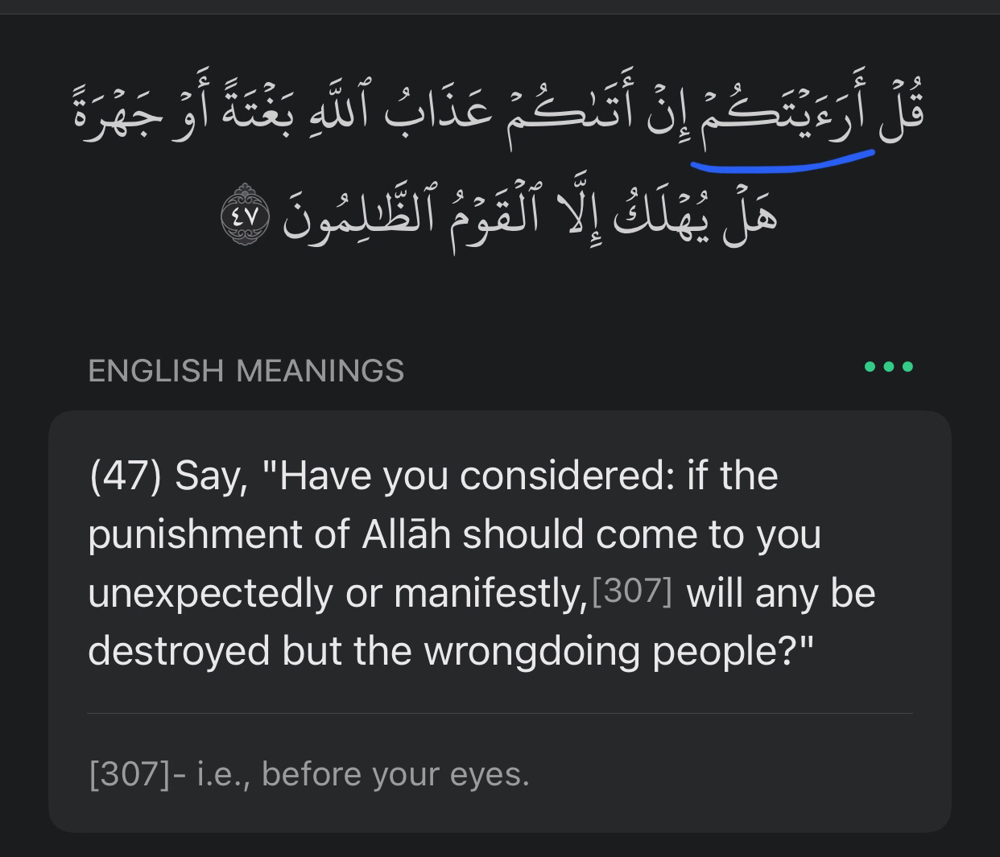
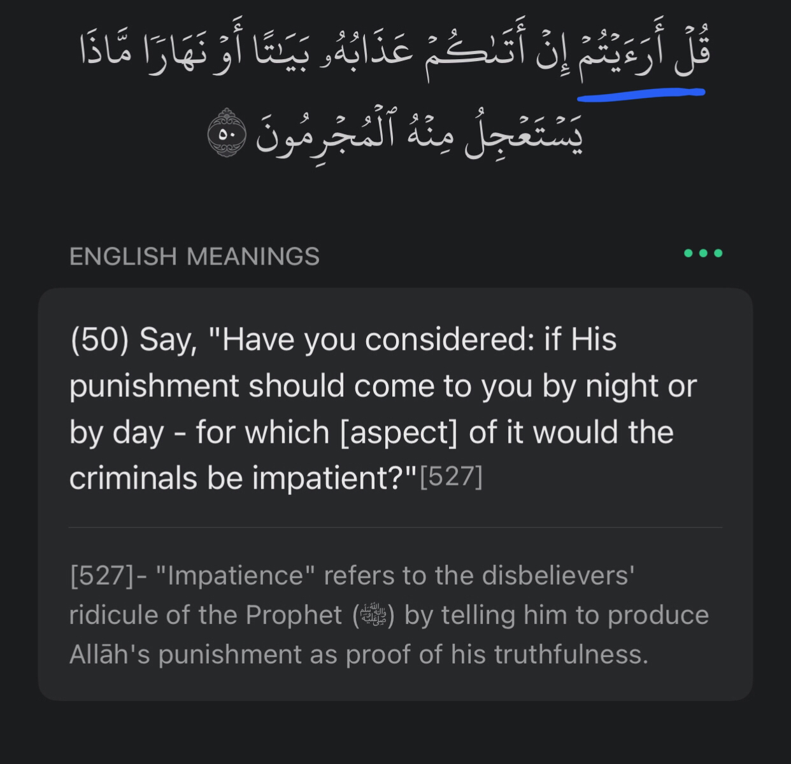
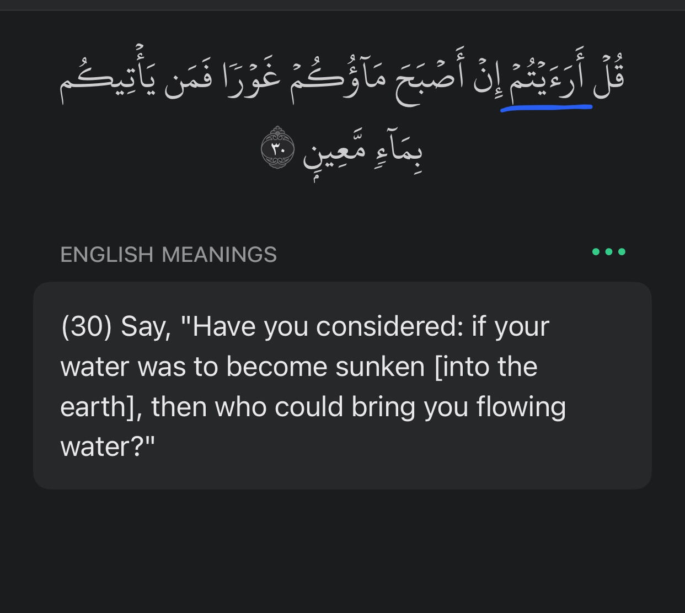
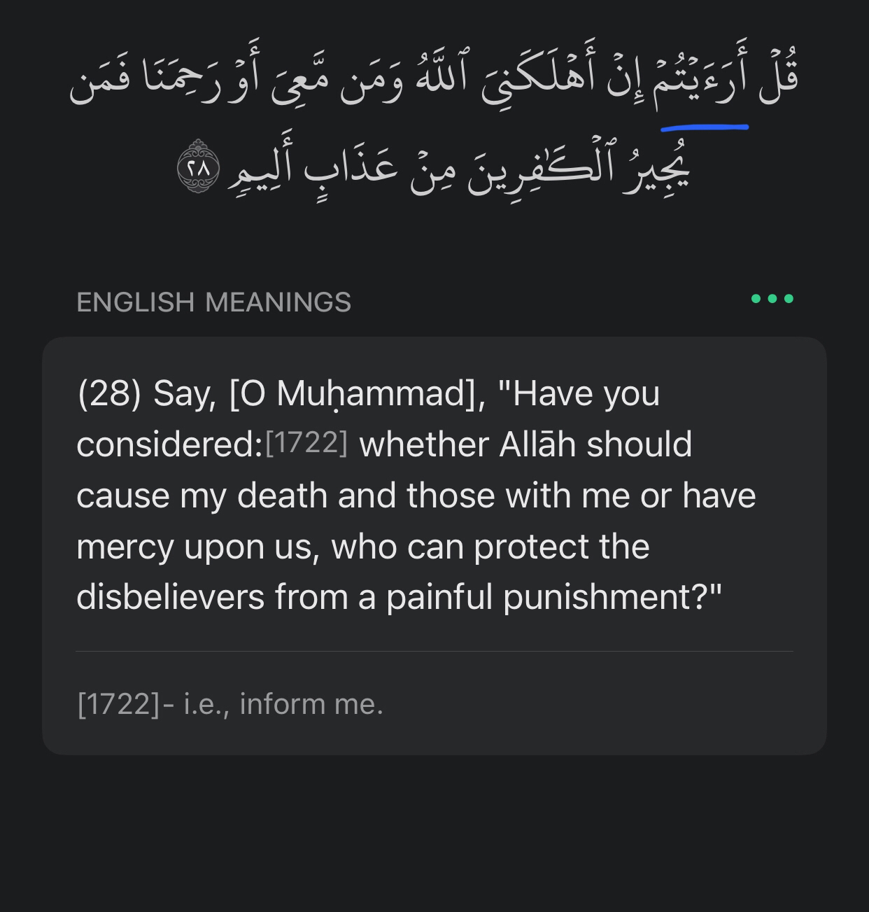
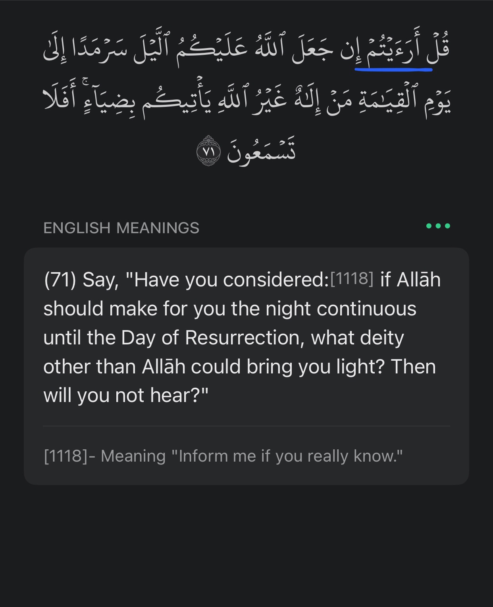

Shaykh Sa’d al-Humayd
This hadeeth was narrated by Imaam al-Bukhaari (may Allaah have mercy on him) in his Saheeh, from ‘Abd-Allaah ibn ‘Umar,
who said: “The Prophet (peace and blessings of Allaah be upon him) led us in praying ‘Ishaa towards the end of his life.
When he had said the salaam, he stood up and said: ‘Do you see this night of yours? One hundred years from now,
there will not be anyone left of those who are on the face of the earth.’”
There follow some comments made by Ibn Hajar (may Allaah have mercy on him) on this hadeeth:
“Led us in prayer” means as an imaam.
“Towards the end of his life”. A corroborating report narrated by Jaabir states that this was one month before he
(peace and blessings of Allaah be upon him) died.
“Do you see” means, “Think about (this night).”
“One hundred years from now” means, when one hundred years have passed.
“There will not be anyone left of those who are on the face of the earth” means, anyone who was alive at that time.
Ibn Battaal said: What the Messenger (peace and blessings of Allaah be upon him) meant was that during this time-span
their generation would pass away. He was pointing out to them how short their lives were and that their lives were not
like those of the nations who came before them, so that they would strive hard in worship.
Al-Nawawi said: What is meant is that everyone who was on the face of the earth on that night would not live for more
than one hundred years after that night, whether he was young on that occasion or not. It does not mean that anyone
who was born after that night would not live for a hundred years. And Allaah knows best.
This hadeeth is one of the signs of the Prophethood of the Prophet (peace and blessings of Allaah be upon him).
He was speaking of future events which came to pass as he described them. The trustworthy scholars use this as
evidence in refuting some of the Sufis who say that al-Khidr is still alive until now.
The claim is that the prophet had made a false prophecy as he said ‘nobody present on the surface of the earth
tonight will be living after 100 years’. Clearly this statement is wrong.
If one took an extra second of his day to read the hadith without frizzing his eyes along the screen like some
jittering squirrel, he would notice the following:
“Nobody present on the surface of the earth tonight will be living after the completion of one hundred years
from this night”.
But they will claim: “oh the prophet said do you not see the importance of this night!!”
That is merely an implication in brackets added onto help understand this hadith, ie, Idraaj, and Idraaj very
often misleads. What it literally says is “do you see this night of yours?” ie he is saying “think about this night”
- and I will prove this to you that this implication in brackets is redundant to the actual meaning of this hadith.
I now demonstrate to you that the prophet saying “do you see this night of yours” or in Arabic “ارأيتكم ليلتكم هذه”
is an allude to evoking thought about the topic and telling the people to consider something, not rendering a
particular importance to it:





But perhaps the most similar notion of all in terms ‘do you not see this night’ is the following:

Is Allah allocating a particular importance to a night in which Allah could hypothetically make perpetual
until Qiyaamah? No. That is exactly it. He is bringing forth a rhetorical device. A consideration for one to
ponder over.
Thus the verb ‘ارأيتكم’ does NOT allude to the attribution of significance to that night in any way whatsoever,
regardless of the implication in the brackets, a typical example of Idraaj which generally leads to misconception,
but rather, it cultivates and brings forth the notion of pondering and contemplating.